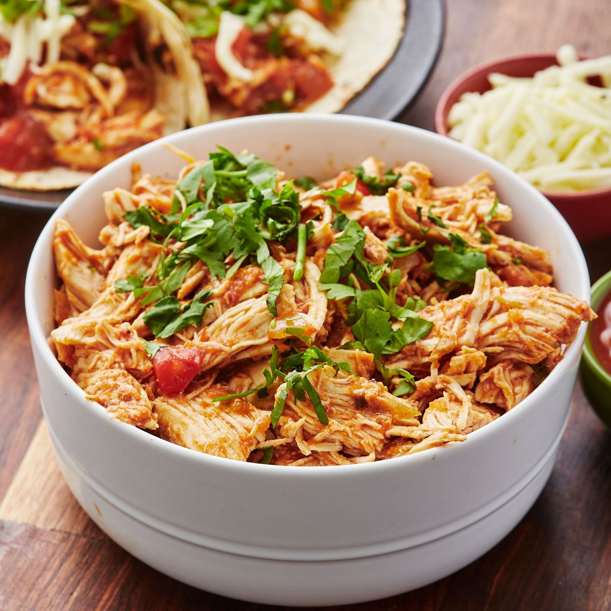

This is probably THE simplest recipe... ever? A slow cooker meal made with only 4 ingredients is really something to celebrate. The chicken falls apart and becomes immensely tender, flavored with the familiar flavors of chunky salsa and taco seasoning, and brightened up with bursts of lime juice. Serve this over rice, in lettuce cups, or as tacos. This recipe is the epitome of set it and forget it.
Want to change it up a little bit? Sub the red salsa for a salsa verde for a totally different flavor and an equally easy dinner.